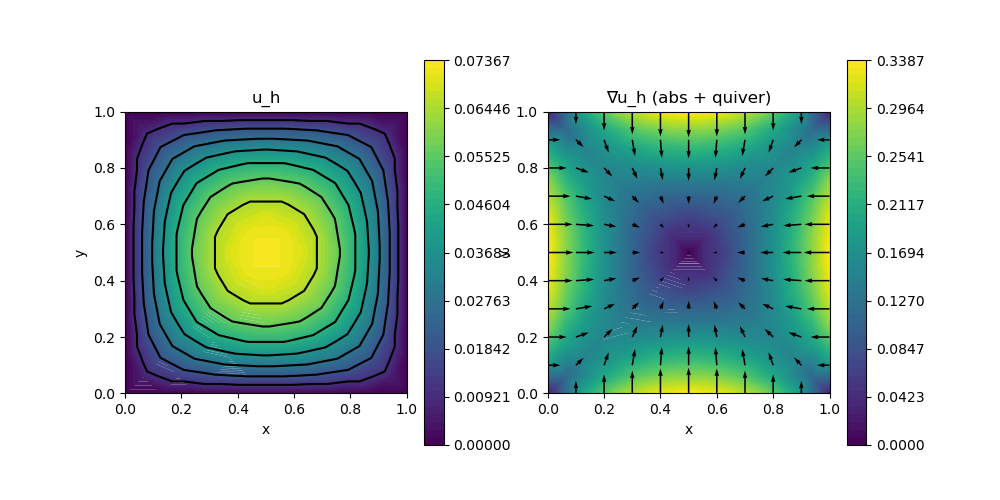

A09 : Poisson-Problem with low level structures
This example computes the solution $u$ of the Poisson problem
\[\begin{aligned} -\Delta u & = f \quad \text{in } \Omega \end{aligned}\]
with some right-hand side $f = 1$ on the unit square domain $\Omega$ on a given grid.
Here, the whole problem is assembled with low level, mid level and high level structures and runtime and allocations in each step are compared.
module ExampleA09_PoissonLowLevel
using GradientRobustMultiPhysics
using ExtendableGrids
using ExtendableSparse
using LinearAlgebra
using GridVisualize
const f = x -> 1
const fdata = DataFunction((result, x) -> (result[1] = f(x);), [1,2]; dependencies = "X")
# everything is wrapped in a main function
function main(; verbosity = 0, order = 2, μ = 1, nrefinements = 3, Plotter = nothing)
# set log level
set_verbosity(verbosity)
# build/load any grid (here: a uniform-refined 2D unit square into triangles)
xgrid = uniform_refine(grid_unitsquare(Triangle2D), nrefinements)
@info "preparing face nodes"
@time xgrid[FaceNodes]
@info "preparing cell volumes"
@time cellvolumes = xgrid[CellVolumes]
# choose FE type
FEType = H1Pk{1,2,order}
# create FESpace and vector
FES = FESpace{FEType}(xgrid)
SolutionLow = FEVector(FES)
SolutionMid = FEVector(FES)
SolutionHigh = FEVector(FES)
# do this here once
@info "preparing celldofs"
@time CellDofs::Adjacency{Int32} = FES[GradientRobustMultiPhysics.CellDofs]
@info "preparing bfacedofs"
@time BFaceDofs::Adjacency{Int32} = FES[GradientRobustMultiPhysics.BFaceDofs]
@info "ndofs = $(length(SolutionLow.entries))"
@time solve_poisson_lowlevel!(SolutionLow; μ = μ)
@time solve_poisson_midlevel!(SolutionMid; μ = μ)
@time solve_poisson_highlevel!(SolutionHigh; μ = μ)
@show norm(SolutionLow.entries - SolutionHigh.entries)
@show norm(SolutionLow.entries - SolutionMid.entries)
# plot solution (for e.g. Plotter = PyPlot)
p = GridVisualizer(; Plotter = Plotter, layout = (1,2), clear = true, resolution = (1000,500))
scalarplot!(p[1,1], xgrid, view(nodevalues(SolutionLow[1]),1,:), levels = 7, title = "u_h")
scalarplot!(p[1,2], xgrid, view(nodevalues(SolutionLow[1], Gradient; abs = true),1,:), vscale = 0.8, levels = 0, colorbarticks = 9, title = "∇u_h (abs + quiver)")
vectorplot!(p[1,2], xgrid, evaluate(PointEvaluator(SolutionLow[1], Gradient)), spacing = 0.1, clear = false)
end
function assemble_Laplacian!(A::ExtendableSparseMatrix, FES; μ = 1)
xgrid = FES.xgrid
EG = xgrid[UniqueCellGeometries][1]
FEType = eltype(FES)
# quadrature formula
qf = QuadratureRule{Float64, EG}(2*(get_polynomialorder(FEType, EG)-1))
weights::Vector{Float64} = qf.w
nweights::Int = length(weights)
# dofmap
CellDofs::Adjacency{Int32} = FES[GradientRobustMultiPhysics.CellDofs]
ndofs4cell::Int = get_ndofs(ON_CELLS, FEType, EG)
dof_j::Int, dof_k::Int = 0, 0
# FE basis evaluator
FEBasis_∇::FEEvaluator{Float64} = FEEvaluator(FES, Gradient, qf)
∇vals::Array{Float64,3} = FEBasis_∇.cvals
# local matrix and vector structures
Aloc = zeros(Float64, ndofs4cell, ndofs4cell)
# ASSEMBLY LOOP
ncells::Int = num_cells(xgrid)
cellvolumes = xgrid[CellVolumes]
@time for cell = 1 : ncells
# update FE basis evaluators
FEBasis_∇.citem[] = cell
update_basis!(FEBasis_∇)
for j = 1 : ndofs4cell
for k = j : ndofs4cell
temp = 0
for qp = 1 : nweights
temp += weights[qp] * μ * dot(view(∇vals,:,j,qp), view(∇vals,:,k,qp))
end
Aloc[j,k] = temp
end
end
Aloc .*= cellvolumes[cell]
for j = 1 : ndofs4cell
dof_j = CellDofs[j, cell]
for k = j : ndofs4cell
dof_k = CellDofs[k, cell]
if abs(Aloc[j,k]) > 1e-14
# write into matrix, may cause allocations
rawupdateindex!(A, +, Aloc[j,k], dof_j, dof_k)
if k > j
rawupdateindex!(A, +, Aloc[j,k], dof_k, dof_j)
end
end
end
end
fill!(Aloc, 0)
end
flush!(A)
end
function assemble_rhs!(b::AbstractVector, FES::FESpace; f = nothing)
if f === nothing
fill!(b, 0)
return
end
xgrid = FES.xgrid
EG = xgrid[UniqueCellGeometries][1]
FEType = eltype(FES)
# quadrature formula
qf = QuadratureRule{Float64, EG}(2*(get_polynomialorder(FEType, EG)-1))
weights::Vector{Float64} = qf.w
xref = qf.xref
nweights::Int = length(weights)
# dofmap
CellDofs::Adjacency{Int32} = FES[GradientRobustMultiPhysics.CellDofs]
ndofs4cell::Int = get_ndofs(ON_CELLS, FEType, EG)
# FE basis evaluator
FEBasis_id::FEEvaluator{Float64} = FEEvaluator(FES, Identity, qf)
idvals::Array{Float64,3} = FEBasis_id.cvals
L2G::L2GTransformer{Float64, Int32, EG} = L2GTransformer(EG, xgrid, ON_CELLS)
# ASSEMBLY LOOP
function barrier(L2G::L2GTransformer{Tv,Ti,Tg,Tc}) where {Tv,Ti,Tg,Tc}
bloc = zeros(Float64, ndofs4cell)
ncells::Int = num_cells(xgrid)
dof_j::Int = 0
x::Vector{Float64} = zeros(Float64, 2)
cellvolumes = xgrid[CellVolumes]
@time for cell = 1 : ncells
for j = 1 : ndofs4cell
# right-hand side
temp = 0
for qp = 1 : nweights
# get global x for quadrature point
update_trafo!(L2G, cell)
eval_trafo!(x, L2G, xref[qp])
# (f, v_j)
temp += weights[qp] * idvals[1, j, qp] * fdata(x)[1]
end
bloc[j] = temp
end
for j = 1 : ndofs4cell
dof_j = CellDofs[j, cell]
b[dof_j] += bloc[j] * cellvolumes[cell]
end
fill!(bloc, 0)
end
end
barrier(L2G)
end
function solve_poisson_lowlevel!(Solution; μ = 1)
@info "\nLOW - start\n=============="
# init FEspace, matrix and right-hand side vector
@info "LOW - assembly"
@time begin
FES = Solution[1].FES
A = FEMatrix(FES, FES)
b = FEVector(FES)
assemble_Laplacian!(A.entries, FES; μ = μ)
assemble_rhs!(b.entries, FES; f = f)
end
# fix boundary dofs
@info "LOW - boundary data"
@time begin
BFaceDofs::Adjacency{Int32} = FES[GradientRobustMultiPhysics.BFaceDofs]
nbfaces::Int = num_sources(BFaceDofs)
AM::ExtendableSparseMatrix{Float64,Int64} = A.entries
for bface = 1 : nbfaces
for j = 1 : num_targets(BFaceDofs,bface)
dof_j = BFaceDofs[j, bface]
AM[dof_j,dof_j] = 1e60
b.entries[dof_j] = 0
end
end
ExtendableSparse.flush!(A.entries)
end
# solve
@info "LOW - solve"
@time Solution.entries .= A.entries \ b.entries
@info "LOW - end"
end
function solve_poisson_midlevel!(Solution; μ = 1)
@info "\nMID - start\n=============="
@info "MID - assembly preparations"
@time begin
FES = Solution[1].FES
A = FEMatrix(FES, FES)
b = FEVector(FES)
FEType = eltype(FES)
end
@info "MID - assembly A"
@time assemble_operator!(A[1,1], LaplaceOperator(μ))
@info "MID - assembly b"
@time assemble_operator!(b[1], LinearForm(Identity, fdata; regions = [1]))
# fix boundary dofs
@info "MID - boundary data"
@time begin
BO = Array{BoundaryData, 1}(undef, 0)
push!(BO, BoundaryData(HomogeneousDirichletBoundary; regions = [1,2,3,4]))
fixed_dofs = boundarydata!(Solution[1], BO)
@views b.entries[fixed_dofs] .= 1e60 * Solution.entries[fixed_dofs]
apply_penalties!(A.entries, fixed_dofs, 1e60)
ExtendableSparse.flush!(A.entries)
end
# solve
@info "MID - solve"
ExtendableSparse.flush!(A.entries)
@time Solution.entries .= A.entries \ b.entries
@info "MID - end"
end
function solve_poisson_highlevel!(Solution; μ = 1)
@info "\nHIGH - start\n=============="
# create PDE description
@info "HIGH - problem description"
@time begin
Problem = PDEDescription("Poisson problem")
add_unknown!(Problem; unknown_name = "u", equation_name = "Poisson equation")
add_operator!(Problem, [1,1], LaplaceOperator(μ))
add_rhsdata!(Problem, 1, LinearForm(Identity, fdata; regions = [1]))
add_boundarydata!(Problem, 1, [1,2,3,4], HomogeneousDirichletBoundary)
end
# solve
solve!(Solution, Problem; show_statistics = true)
@info "HIGH - end"
end
endThis page was generated using Literate.jl.
